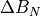

spacepy.pybats.bats.Mag¶
- class spacepy.pybats.bats.Mag(nlines, time, gmvars=(), ievars=(), *args, **kwargs)[source]¶
A container for data from a single BATS-R-US virtual magnetometer. These work just like a typical
spacepy.pybats.PbDataobject. Beyond raw magnetometer data, additional values are calculated and stored, including total pertubations (the sum of all global and ionospheric pertubations as measured by the magnetometer). Users will be interested in methodsadd_comp_plot()andcalc_dbdt().Instantiation is best done through
spacepy.pybats.bats.MagFileobjects, which load and parse organize many virtual magnetometers from a single output file into a single object. However, they can be created manually, though painfully. Users must instantiate by handing the new object the number of lines that will be parsed (rather, the number of data points that will be needed), a time vector, and (optionally) the list of variables coming from the GM and IE module. While the latter two are keyword arguments, at least one should be provided. Next, the arrays whose keys were given by the gmvars and ievars keyword arguments in the instantiation step can either be filled manually or by using theparse_gmline()andparse_ieline()methods to parse lines of ascii data from a magnetometer output file. Finally, thespacepy.pybats.bats.Mag.recalc()method should be called to calculate total perturbation.- __init__(nlines, time, gmvars=(), ievars=(), *args, **kwargs)[source]¶
Base class for “Data Model” representation data
Abstract method, reimplement
- Attributes:
- attrsdict
dictionary of the attributes of the SpaceData object
Methods
add_comp_plot(direc[, target, add_legend, ...])Create a plot with, or add to an existing plot, an illustration of how the separate components sum together to make the total disturbance in a given orthongal direction (arg direc).
add_plot(value[, style, target, loc, label])Plot value, which should be a key corresponding to a data vector stored in the
Magobject, against the object's time.Calculate the time derivative of all dB-like variables and save as dBdt[direction][component].
calc_h()Calculate the total horizontal perturbation, 'H', using the pythagorean sum of the two horizontal components (north-south and east-west components):
parse_gmline(i, line, namevar)Parse a single line from a GM_mag*.out file and put into the proper place in the magnetometer arrays.
parse_ieline(i, line, namevar)Parse a single line from a IE_mag*.out file and put into the proper place in the magnetometer arrays.
Attributes
- add_comp_plot(direc, target=None, add_legend=True, loc=111, lw=2.0)[source]¶
Create a plot with, or add to an existing plot, an illustration of how the separate components sum together to make the total disturbance in a given orthongal direction (arg direc). The three possible components are ‘n’ (northwards, towards the magnetic pole), ‘e’ (eastwards), or ‘d’ (downwards towards the center of the Earth.) The components of the total disturbance in any on direction are magnetospheric currents (‘gm_dB’), gap-region field-aligned currents (‘gm_facdB’), and ionospheric Hall and Pederson currents (‘ie_Jp’ and ‘ie_Jh’).
Example usage:
>>> self.add_comp_plot('n')
This will create a new plot with the total disturbance in the ‘n’ direction along with line plots of each component that builds this total. This method uses the familiar PyBats target kwarg system to allow users to add these plots to existing figures or axes.
- Parameters:
- direcstring
Indicate the direction to plot: either ‘n’, ‘e’, ‘d’, or ‘h’ if calculated.
- Other Parameters:
- targetMatplotlib Figure or Axes object
Set plot destination. Defaults to new figure.
- loc3-digit integer
Set subplot location. Defaults to 111.
- add_legendbool
Add legend to plot. Defaults to True.
- lwfloat
Set the width of the lines. Defaults to 2.0 Total field is always 1.5 times thicker.
- add_plot(value, style='-', target=None, loc=111, label=None, **kwargs)[source]¶
Plot value, which should be a key corresponding to a data vector stored in the
Magobject, against the object’s time. The target kwarg specifies the destination of the plot. If not set, target defaults to None and a new figure and axis will be created. If target is a matplotlib figure, a new axis is created at subplot location 111 (which can be changed using kwarg loc). If target is a matplotlib Axes object, the line is added to the plot as ifAxes.plot()was used. The line label, which is used for setting labels on figure legends, defaults to the value key but can be customized with the “label” kwarg. The style keyword accepts basic Matplotlib line style strings such as ‘–r’ or ‘+g’. This string will be passed on to the plot command to customize the line.All extra kwargs are handed to
Axes.plot, allowing the user to set any additional options (e.g., line color and style, etc.).Three values are returned: the Figure object, Axis object, and newly created line object. These can be used to further customize the figure, axis, and line as necessary.
Example: Plot total  onto an existing axis with line color blue, line style dashed, and line label “Wow!”:
>>> self.plot('dBn', target='ax', label='Wow!', lc='b', ls='--')
Example: Plot total on a new figure, save returned values and overplot additional values on the returned axis. Default labels and line styles are used in this example.
>>> fig, ax, line = self.plot('n') >>> self.plot('dBe', target = ax)
- calc_dbdt()[source]¶
Calculate the time derivative of all dB-like variables and save as dBdt[direction][component]. For example, the time derivative of dBeMhd will be saved as dBdteMhd.
$|dB/dt|_h$ is also calculated following the convention of Pulkkinen et al, 2013: $|dB/dt|_H = sqrt{(dB_N/dt)^2 + (dB_E/dt)^2}$
A 2nd-order accurate centeral difference method is used to calculate the time derivative. For the first and last points, 2nd-order accurate forward and backward differences are taken, respectively.
- calc_h()[source]¶
Calculate the total horizontal perturbation, ‘H’, using the pythagorean sum of the two horizontal components (north-south and east-west components):
$Delta B_H = sqrt{Delta B_N^2 + Delta B_E^2}$
- parse_gmline(i, line, namevar)[source]¶
Parse a single line from a GM_mag*.out file and put into the proper place in the magnetometer arrays. The line should have the same number of variables as was initially given to the
Magobject. This method is best used through theMagFileclass interface.Usage:
>>> self.parse_gmline(i, line, namevar)
where i is the entry number, line is the raw ascii line, and namevar is the list of variable names.
- parse_ieline(i, line, namevar)[source]¶
Parse a single line from a IE_mag*.out file and put into the proper place in the magnetometer arrays. The line should have the same number of variables as was initially given to the
Magobject. This method is best used through theMagFileclass interface.Usage:
>>> self.parse_gmline(i, line, namevar)
where i is the entry number, line is the raw ascii line, and namevar is the list of variable names.
- attrs: collections.abc.Mapping¶